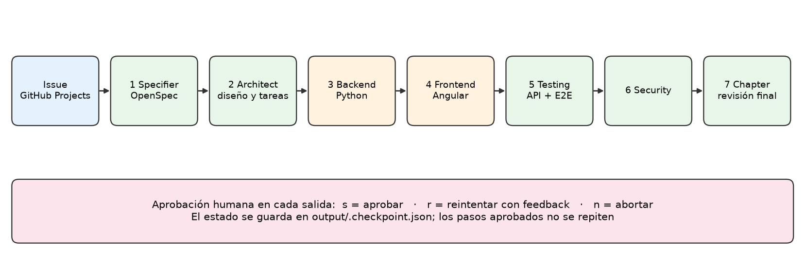
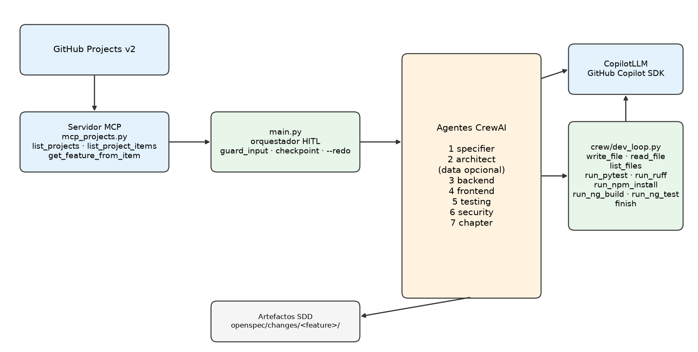

Agentes, herramientas, MCP y validación humana
Proyecto Digital Wallet · hu-02 como caso de referencia

| Rol | Qué produce | Herramientas |
|---|---|---|
| specifier | Propuesta y specs de OpenSpec | Texto |
| architect | Diseño, contratos OpenAPI y tareas. Lee el issue por MCP | Lectura del issue |
| data (opcional) | Modelo de datos y SQL propuesto | Texto |
| backend | API FastAPI y pruebas | Escribir, leer, listar, pytest, ruff, finish |
| frontend | Aplicación Angular | Escribir, leer, listar, npm install, ng build, ng test, finish |
| testing | Pruebas de API y E2E | Texto |
| security | Hallazgos priorizados con evidencia | Texto |
| chapter | Veredicto final: APROBADO o RECHAZADO | Texto |
Cada funcionalidad es un cambio en openspec/changes/<feature>/, con propuesta, specs, diseño y tareas.
check_output valida cada salida por rol.openspec validate corre al final.openspec validate son advertencias: no bloquean la aprobación.mcp_projects.py consulta el servidor MCP por HTTP/SSE usando PROJECTS_MCP_URL.list_projects, list_project_items y get_feature_from_item.main.py pide elegir proyecto e item; esa elección también es un paso aprobable.<<<TOOL nombre argumento>>>.finish solo se acepta con compuertas en verde.pytest.ng build y ng test (ChromeHeadless).output/.checkpoint.json guarda el estado.python main.py --redo <paso> regenera ese paso y los siguientes.
flowchart TD
GH["GitHub Projects
issue"] --> MCP["Servidor MCP
mcp_projects.py"]
MCP --> M["main.py
aprobación humana"]
M --> AG["Agentes CrewAI
specifier · architect · backend
frontend · testing · security · chapter"]
AG --> LLM["CopilotLLM
GitHub Copilot SDK"]
AG --> DL["Herramientas
escribir · leer · pytest · ng build · ng test"]
DL --> CODE[("code/ backend y frontend")]
AG --> REP[("reports/ y tasks.md")]
M --> CK[("output/.checkpoint.json")]
Diagrama completo de docs/arquitectura.md. Desplázate con la rueda del ratón (Shift + rueda para horizontal).
flowchart TD
%% ===== Fuentes externas =====
subgraph EXT["Fuentes externas"]
GH["GitHub Projects v2"]
MCPSRV["Servidor MCP Proyectos
PROJECTS_MCP_URL, endpoint /mcp"]
COPILOT["GitHub Copilot SDK
modelo COPILOT_MODEL"]
OASPEC["client/openapi
contratos externos (carpeta no presente)"]
end
%% ===== Orquestador =====
subgraph ORQ["Orquestador main.py"]
MAIN["main.py
flujo HITL por etapa"]
WF["crew/workflow.py
ROLES y DATA_ROLES"]
GUARD["guard_input
anti prompt injection y redaccion de secretos"]
CKPT[("output/.checkpoint.json")]
HITL{{"Humano
s aprobar, r reintentar, n abortar"}}
end
%% ===== Cliente MCP =====
subgraph MCPC["Cliente MCP mcp_projects.py"]
LP["list_projects"]
LPI["list_project_items"]
GF["get_feature_from_item"]
end
%% ===== LLM =====
subgraph LLMS["Capa LLM"]
CLLM["CopilotLLM
crew/copilot_llm.py"]
RT["lab_copilot/runtime.py
streaming en terminal"]
end
%% ===== Agentes CrewAI =====
subgraph AGENTS["Agentes CrewAI, en orden"]
SP["1 specifier
OpenSpec proposal y specs"]
AR["2 architect
load_issue, diagramas, OpenAPI, tareas"]
DA["data
opcional, CREWAI_INCLUDE_DATA"]
BE["3 backend
bucle de herramientas"]
FE["4 frontend
Angular"]
TE["5 testing
pytest API y Selenium E2E"]
SE["6 security"]
CH["7 chapter"]
end
%% ===== Herramientas del backend =====
subgraph TOOLS["Herramientas de backend y frontend crew/dev_loop.py"]
DL["run_dev_loop
12 iteraciones backend, 20 frontend"]
FSTOOLS["write_file, read_file, list_files"]
RUNTOOLS["backend: run_pytest, run_ruff
frontend: run_npm_install, run_ng_build, run_ng_test"]
FIN["finish
solo si los gates estan en verde"]
end
%% ===== Persistencia y validacion =====
subgraph OUT["Entregables y validacion"]
CHG["openspec/changes/feature/
design.md, tasks.md, openapi.yaml, specs, reports"]
CODE["openspec/changes/feature/code/backend
app y tests"]
OSCLI["OpenSpec CLI
openspec validate"]
GUARDOUT["check_output
guardrails por rol"]
end
%% ===== Conexiones =====
GH --> MCPSRV
MCPSRV --> LP
MCPSRV --> LPI
MCPSRV --> GF
MAIN -->|"elegir proyecto"| LP
MAIN -->|"elegir item"| LPI
MAIN --> GUARD
GUARD --> AR
AR -->|"load_issue"| GF
MAIN --> WF
WF --> SP
WF --> AR
WF --> DA
WF --> BE
WF --> FE
WF --> TE
WF --> SE
WF --> CH
SP -->|"run_role"| CLLM
AR -->|"run_role"| CLLM
DA -->|"run_role"| CLLM
FE -->|"develop"| DL
TE -->|"run_role"| CLLM
SE -->|"run_role"| CLLM
CH -->|"run_role"| CLLM
BE -->|"develop"| DL
DL -->|"prompt y respuesta"| CLLM
CLLM --> RT
RT --> COPILOT
AR -.->|"lee contratos"| OASPEC
MAIN -.->|"read_openapi"| OASPEC
DL --> FSTOOLS
DL --> RUNTOOLS
DL --> FIN
FSTOOLS --> CODE
RUNTOOLS -->|"python -m pytest y ruff"| CODE
SP --> CHG
AR --> CHG
DA --> CHG
FE --> CHG
TE --> CHG
SE --> CHG
CH --> CHG
BE --> CHG
CHG --> GUARDOUT
GUARDOUT --> OSCLI
MAIN --> HITL
HITL -->|"r feedback"| MAIN
HITL -->|"s aprobado"| CKPT
CKPT --> MAIN
MAIN -->|"fin del flujo"| OSCLI
main.py elige proyecto e item con el MCP. architect.load_issue lee el issue con get_feature_from_item. Ningún agente llama al MCP mientras trabaja.data si CREWAI_INCLUDE_DATA=true. Todos usan CopilotLLM, que transmite la salida a la terminal.crew/dev_loop.py: escribir y leer archivos, ejecutar sus gates y finish. Backend ejecuta pytest y ruff; frontend ejecuta npm install, ng build y ng test. El resto de roles responde en texto.client/openapi/, pero esa carpeta no existe en el repo; el diagrama la muestra con línea punteada para indicarlo.openspec/changes/<cambio>/code/backend/ (app/ y tests/); frontend en code/frontend/.check_output y se guarda en el cambio de OpenSpec. Al final se corre openspec validate.output/.checkpoint.json.openspec validate aún no bloquea la aprobación.client/openapi/ es referenciado por los prompts pero no existe en el repositorio.docs/arquitectura.md y docs/presentacion/crew-sdd-solucion.pptx.